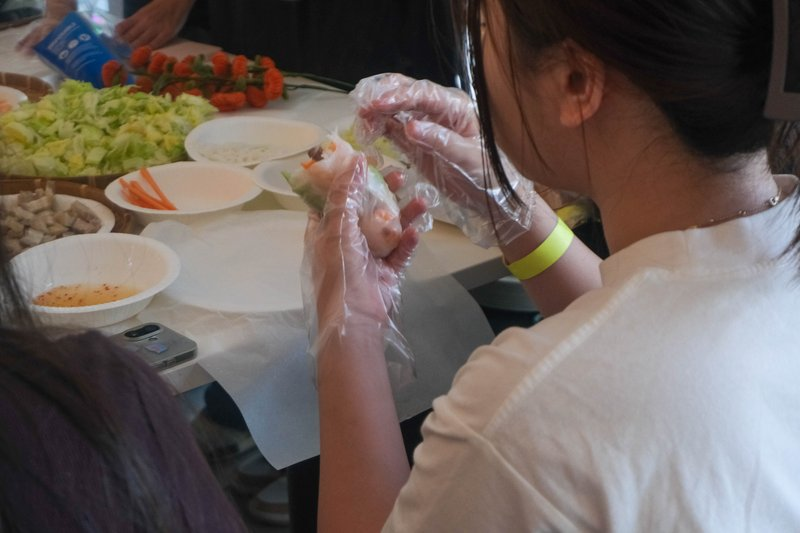
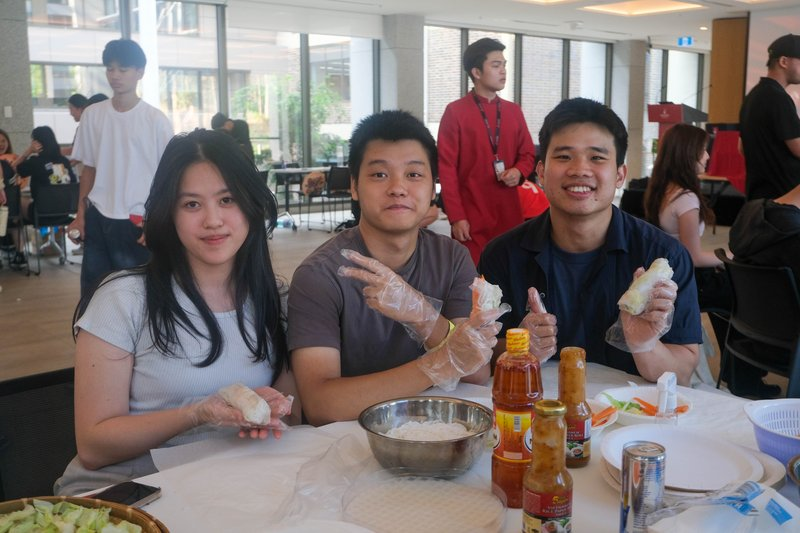

Events · Album 12 / 13
Making rice paper rolls at Cultural Day. Here it is step by step, from the ingredients to the finished roll.


 Next albumSerenade '24Stage show · 2024 · 3 photos
Next albumSerenade '24Stage show · 2024 · 3 photos
Want photos like these? DM me on Instagram or call 0490 324 875.